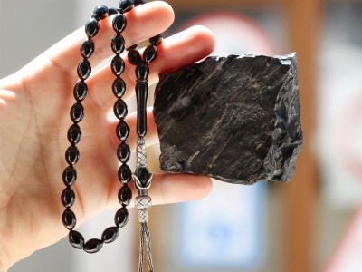

Mirasımız
Erzurum Kültürel Mirası
| Resim | Miras Adı | Açıklama |
|---|---|---|
| Erzurum barı | Erzurum barı, Türkiye'de Erzurum ili ve yöresinde el ele tutuşarak oynanan bir halk oyunudur. Erzurum denince akla dadaş, dadaş denince de akla bar gelir. Bar, Erzurum ve yöresinde oynanan folklorik özellikteki halk oyunlarının genel adıdır. | |
| Cirit | Cirit, at üzerinde oynanan spor dallarından biridir. At üzerindeki sporcunun ciridini rakibe karşı isabetli bir şekilde atmasını, muharebe anında kendisine ve bineğine olan hakimiyetini ve bu yolla rakibine üstün gelmesini amaç edinen, kuralları olan bir spordur. Genellikle Kars, Bayburt, Ardahan, Uşak ve Erzurum'da oynanır. | |
|  | Oltu taşı | Oltu taşı, Türkiye’de Erzurum'un Oltu ilçesinin kuzeydoğu kesiminden çıkarılmakta olan yarı değerli bir taştır. Dünyada ise özellikle Fransa ve Kuzey Amerika’da bulunmaktadır. Kolay işlenebilme özelliğinden dolayı takı ve ziynet eşyası yapımında kullanılır. |
| Semaver kıtlama çay | Erzurum'da bir kültür haline gelen "kıtlama çayı" ve "semaver", özellikle ramazanda yöre halkının vazgeçilmezleri arasında yer alıyor. Ramazanın coşkuyla yaşandığı kentte iftar sonrası mahalle, cadde ve ara sokaklara kazan şeklindeki büyük semaverler kuran kahvehane işletmecileri, gün boyu özlenen çayı, limon eşliğinde müşterilerine servis ediyor. |